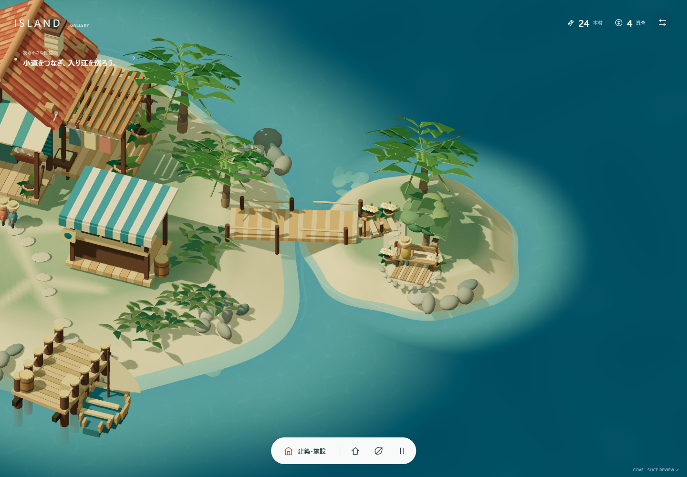
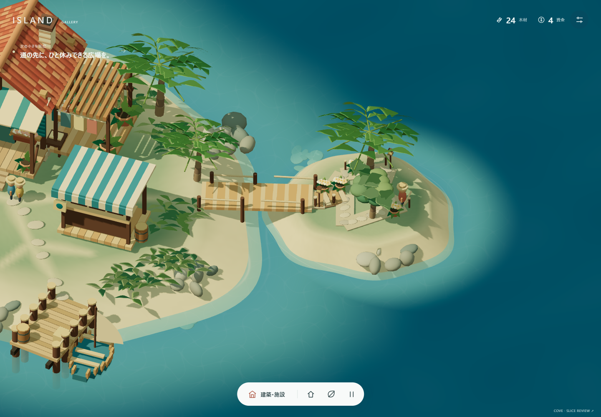

Route A · 広場先行 / 海際
全編 312.5秒 / 50クリック / 個別割当0
GAME005 / EXPANSION SLICE R1
広場を作る。小道をつなぐ。住民が歩き、座り、また仕事へ戻る。
採用MVPを保全した、次の一段階のHuman Reviewです。
HUMAN EXPANSION GATE PENDING · Full Gameではありません
通常試遊は別保存でMVPから連続します。入り江は橋の完成後。Physical iPhone / Safari: NOT TESTED。実際の通常入力から記録。状態注入・録画専用美化なし。各画像はクリックすると原寸になります。


全編・1倍速・無音の画面記録です。ゲーム内音は既存実装を維持。最後の観察は進行に必要なタイマーではありません。
全編 312.5秒 / 50クリック / 個別割当0
全編 342.6秒 / 50クリック / 個別割当0
独立レビューで「装飾だけ」の停止条件に該当しないことを確認。Humanの主観評価・Acceptanceは未判定です。
港・高台・次地区・Full Gameへ自動拡張しません。
2資源・3人・自動作業・個別割当なし。Gold CSS、既存音、Accepted入力133、元の保存と公開設定を保全。候補専用version3保存。新しい管理指標・offline収益なし。
Unit22 / Browser18群 / strict typecheck / build。保存・途中工事・配置・完成後・idle→work→idle、JA/EN、desktop・mobile viewportを検査。配布chunk警告は残存。検査用の一時Edge profile検出5件は別のraw FAIL／Human disposition PENDINGとして保持。詳細なQA、Security、性能、保全はworkspace内のREPORT.mdとJSON証拠を参照。
Physical iPhone / Safari、実聴、外部初見、長期継続はNOT TESTED / UNKNOWN。技術PASSからHuman品質や実機PASSを推定しません。
GAME005_EXPANSION_SLICE_R1_READY
HUMAN_EXPANSION_GATE_PENDING